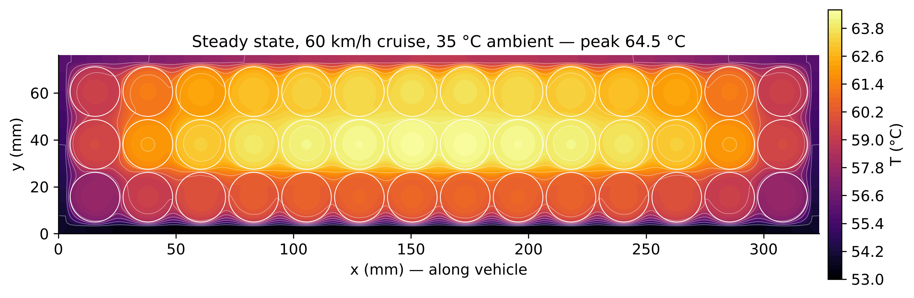
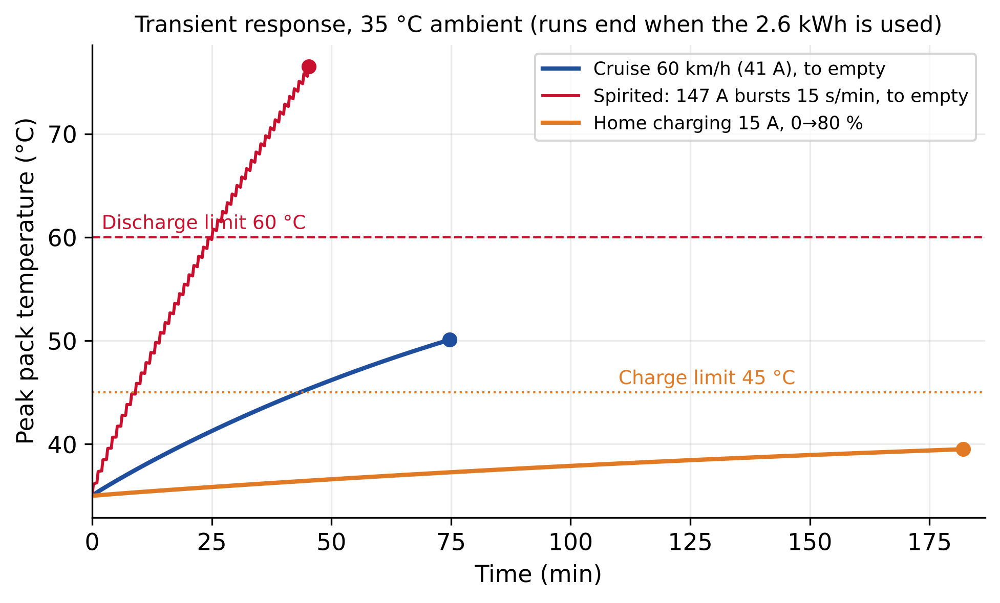
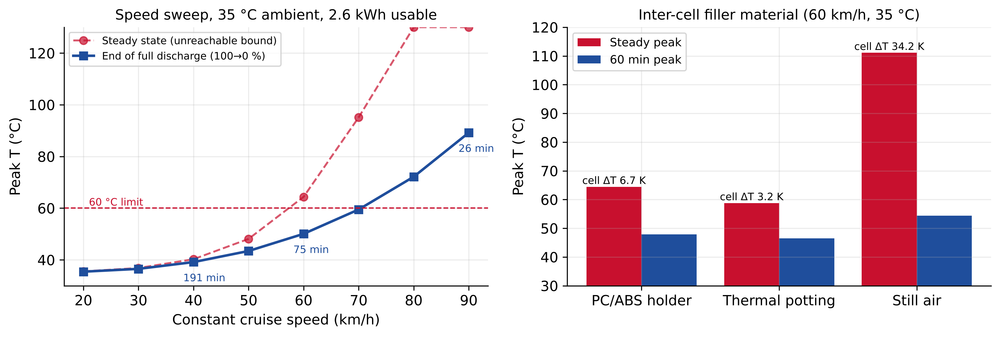
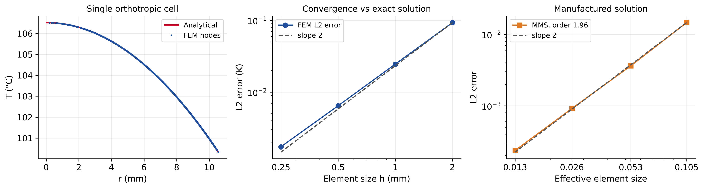

Key results (60 km/h, 35 °C ambient)
Steady-state bound 64.5 °C; a full discharge at 60 km/h peaks at 50.1 °C (within the 60 °C cell limit); aggressive riding crosses 60 °C after ≈ 25 min; 15 A home charging stays at 39.5 °C. A conductive potting halves the cell-to-cell spread (6.7 → 3.2 K).



Verification
Second-order convergence against an exact orthotropic-cell solution, MMS order 1.96, Grid Convergence Index 0.18 %, energy balance 10⁻⁵ %, and the exported ANSYS APDL deck reproduced to 7×10⁻⁸ K by an independent FE code.

Team
Raghav Mahawar1RV23ME086
Panyam Chetan Sai Anirv1RV23ME079
Vishal Kumar Singh1RV23ME122
Mahesh Kembhavi1RV23ME065
Guide: Dr. Shanmukha Nagaraj, Professor & Head, ME · Co-Guides: Dr. Anjaneya G, Dr. Kirthan L J, Professors, ME